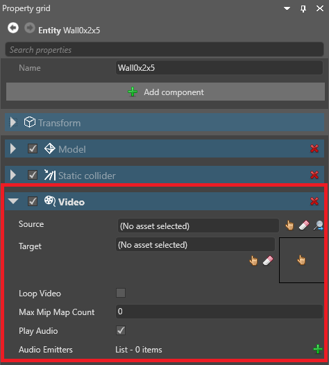
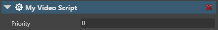

ビデオのセットアップ
初級 プログラマー デザイナー
Note
Stride はほとんどの主要なビデオフォーマットをサポートしていますが、それらは .mp4 に変換されます。コンパイル時間を短縮するために、最初から .mp4 ファイルを使用することをお勧めします。そうすれば、Stride がそれらを変換する必要がなくなります。
Note
今のところ、Stride は iOS プラットフォームではビデオをサポートしていません。
1. ビデオアセットを追加する
ゲームでビデオを使う前に、アセットとしてインポートする必要があります。
ビデオファイルを、エクスプローラーからアセットビューにドラッグします。
または、アセットビューで [Add asset] をクリックし、[Media] > [Video] を選択し、追加したいビデオを選択して [Open] をクリックします。

ビデオがオーディオトラックを持っている場合は、ビデオとオーディオを同時にインポートするか、あるいはビデオからオーディオをインポートすることができます。

[OK] をクリックします。
Stride は、ビデオをアセットとしてアセットビューに追加します。ビデオファイルからオーディオトラックをインポートした場合は、Stride はそれらを独立したオーディオアセットとして追加します。

Note
今のところ、アセットプレビューでビデオをプレビューすることはできません。
ビデオアセットのプロパティの詳細については、ビデオのプロパティを参照してください。
2. ビデオコンポーネントを追加する
シーンエディターで、ビデオコンポーネントを追加する先となるエンティティを選択または作成します。
Tip
通常は、ビデオを再生するためのテクスチャーを持つエンティティにビデオコンポーネントを追加するのが最も簡単です。そうすることで、シーンが整理しやすくなります。
プロパティグリッドで、[Add component] をクリックし、[Video] > [Video] を選択します。

Stride は、エンティティにビデオコンポーネントを追加します。

Video プロパティの Source で、ビデオアセットを選択します。

Target プロパティで、ビデオの表示に使用するテクスチャを選択します。

モデルは、このテクスチャーをビデオの表示に使います。
ビデオが再生されていないときには、Stride はそのテクスチャを代わりに表示します。
3. ビデオを再生するスクリプトを作成する
ビデオコンポーネントをセットアップした後に、スクリプトで以下のように再生します。
myVideoComponent.Instance.Play();
その他の関数
LoopRange: ループ範囲（PlayRangeで指定した範囲内である必要があります）。IsLooping: ビデオを無限にループします。SpeedFactor: 再生速度。通常の速度は1です。PlayState: 現在のビデオ再生状態（playing,paused,stoppedのいずれか)。Duration: ビデオの長さ。CurrentTime: 現在の再生時刻（ビデオの先頭から）。Volume: オーディオの音量。PlayRange: ビデオの開始時刻と終了時刻。Play/Pause/Stop: ビデオを再生、一時停止、停止します。Seek: 指定時刻に移動します。
サンプルスクリプト
{
public class VideoScript : StartupScript
{
// Game Studioは、このスクリプトで宣言したパブリックメンバーフィールドとプロパティを表示します。
// Game Studio displays the public member fields and properties you declare in this script
public override void Start()
{
// スクリプトの初期化。
// Initialization of the script.
Entity.Get<VideoComponent>().Instance.Play();
}
}
}
4. エンティティにスクリプトを追加する
シーンエディターで、ビデオコンポーネントを持つエンティティを選択します。
プロパティグリッドで、[Add component] をクリックし、ビデオスクリプトを選択します。
Stride は、そのスクリプトをコンポーネントとして追加します。
プロパティグリッドで、コンポーネントのプロパティでスクリプトで定義したpublic変数を調整することができます。
